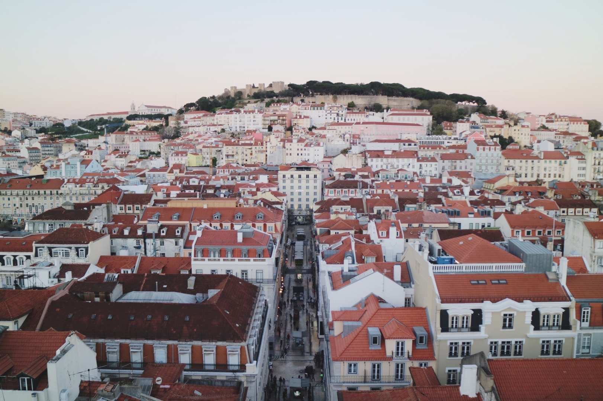

Downtown of Lisboa (Buy the ticket of the viewpoint is worthwhile!)
Portugal
Introduction of Portugal
Once capital of one of the largest empires in the world, Portugal packs great variety for its size. In a few days' drive, you can go from the wide Douro valley, layered with port wine vineyards, to hilly Porto with its Roman roots, through laid-back Lisbon and UNESCO-protected Evora to sunny Algarve's beach resorts backed by craggy rocks.
My recommendation:
1. Sintra
Traces of humanity in Sintra date back to Paleolithic times. At an open air site near the church of Sao Pedro de Canaferrim and the Moorish Castle there were found ceramics from 5,000 BC. The name Sintra is indo-European. It means "bright star" or "sun." Romans called the place "sacred mountain." Ptolemy called it "mountains of the moon."
In 1147 the Moorish Castle (Castelo dos Mouros) surrendered to Afonso Henriques. Afonso commenced building Christian churches. The church of Saint Peter of Canaferrim was established within the walls of the Castle. Throughout the 12th and 13th centuries convents, monasteries, and the military built residences, estates and mills.
In 1287 King Dinis ceded the town to Queen Elizabeth of Portugal. The town remained a possession of the Queen of Portugal until 1383. King Edward described the region in 1435 as "A land of good air and water." Sintra has been the refuge of kings and nobility for centuries. It is replete with locations that are enigmatic and magical.
The Pena Palace is for fans of Romantic architecture and sprawling exotic gardens. The Regaleira Palace sits amid an enchanted wood and gardens filled with statues of mythological heroes and ceremonial wells for obscure rites. Wells with stairs but no water.
2. Lagos
Lagos, from captive to captivating.
The story of Lagos is over 2,000 years old. It was a Celtic settlement before the Punic Wars of Rome and Carthage. During the Second Punic War the people of Lagos sided with Hannibal and the Carthaginians. That didn't work out so well. The Romans came, then the Visigoths from Toledo, followed by the Byzantines. In the 8th century the Moors arrived.
The Moors hung on until the arrival of King Alfonso III in 1241. He declared himself King of Portugal, the Moors then left and Lagos was Portuguese. In 1415 King John I gathered his fleet in Lagos, sailed south and sacked the Moorish port city of Ceuta. Lagos became the center of the expanding empire.
The religious, civic and military history of Lagos is in its landmarks. One can start with the Flag's Mast Fort. It is a square shaped fort, now a museum, with turrets and a drawbridge guarding the harbor entrance. The Castle of Lagos and the encircling walls were at one time the city's main defense.